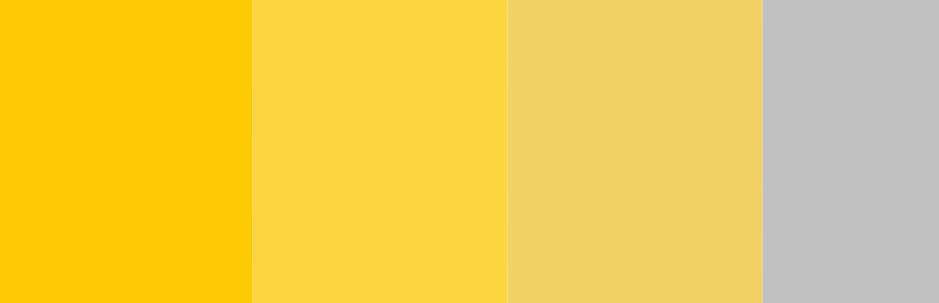

"일루미네이팅&얼티밋그레이의 활용"
일루미네이팅 색상은 보다 포인트를 줄 수 있는 색상이다.
경쾌한 이미지의 옐로우 색을 띠고 있는데 이를 활용한 패션 아이템 역시 다양하다.
"일루미네이팅&얼티밋그레이의 패션"
얼티밋그레이 자체가 차분함을 가진 색상이다 보니 일루미네이팅과 조화롭게 사용할 수 있는 부분도 다양한 패션 코디를 선보이는 것에 결정적인 역할을 한다.
해외 스트릿 패션에서도 올해의 패션 컬러를 활용한 의상 착장이 주목을 받고 있다.
깊이 있는 그레이와 발랄한 옐로우가 어우러져 새로운 색의 조화를 이뤄낸다.
"일루미네이팅&얼티밋그레이의 인테리어"
짙고 차분한 색상이다 보니 다소 고루해 보일 수도 있는 그레이는 발랄한 일루미네이팅을 만나 한층 성숙하지만 산뜻함을 잃지 않은 모습으로 조화를 이룬다.
